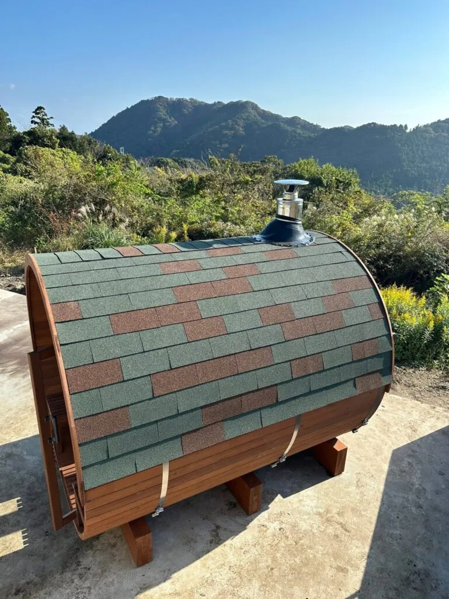
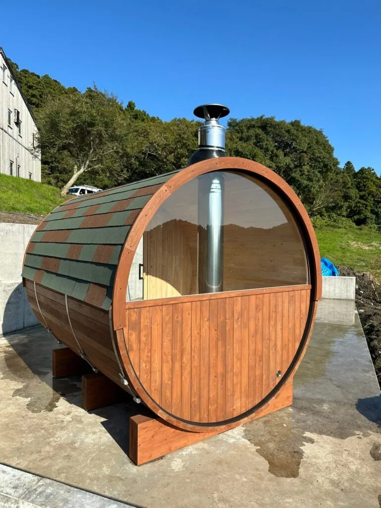
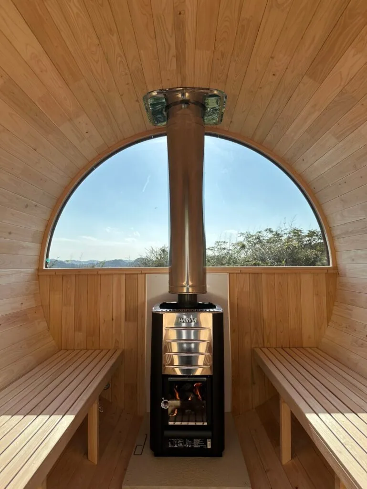

「本当。気持ちいいんですよ。」
柔らかな口調でそう語るのは、千葉県の別荘にバレルサウナを導入されたS様。
電気も水道も引かないオフグリッドの森で、国産ヒノキの香りに包まれ、薪ストーブの揺らめく炎を眺める。そして最高の「ととのい」へ―。
この記事では、S様のライフスタイルと深く結びついたバレルサウナ導入の物語を、ご本人の言葉と共にご紹介します。なぜバレルサウナだったのか、その妥協なき選択の理由、そして導入後の最高の日常とは。

- 導入者: S様
- 設置場所: ご自身の別荘
- 設置環境: 電気・水道なしのオフグリッド環境
なぜバレルサウナだったのか？ 導入前の課題と3つのこだわり
「バレルサウナを入れたい」という純粋な思いから、S様のサウナ探しは始まりました。そこには、明確な3つのこだわりがありました。
こだわり①：熱源は「薪」一択
当初は建物内のバスルームへの設置も検討しましたが、その考えはすぐに変わります。
「やっぱり薪がいいな。」
電気やガスでは得られない、薪ならではの熱の質と炎の揺らめき。このこだわりが、屋外設置型のバレルサウナへとS様を導きました。
こだわり②：インフラから独立した「オフグリッド」という生き方
S様の別荘は、ソーラーパネルと蓄電池で電力を、山の水は濾過して生活用水を賄う「オフグリッド」スタイル。唯一残っていたプロパンガスも「いずれはなくしたい」と考えていました。薪を熱源とするサウナは、インフラから完全に独立し、自給自足するライフスタイルの完成に向けた重要なピースだったのです。
こだわり③：日本の気候を知るからこその「国産材」
木造建築に詳しいS様は、高温多湿な日本の気候において、輸入木材が反りや劣化などの問題を起こしやすいことを熟知していました。
「やっぱり気候が違うから色々問題が出やすい。国内の材料で作りたい。」
この強い信念から、サウナの素材は「国産ヒノキ」に的を絞り、他を検討することはなかったと言います。

このサウナが選ばれた「決め手」
Instagramで見た一枚の写真が、Rink SAUNAとの出会いでした。
数ある製品の中から選ばれた決め手は、S様のこだわりをすべて満たすものでした。
・唯一無二の「国産ヒノキ
「やっぱり国産ヒノキっていうのがいいなと思って。」
日本の気候に最適な国産ヒノキを使用していることが、何よりの魅力でした。
・パワフルで高効率な薪ストーブ「HARVIA M3」
「すごくいいですね。広さに対して薪ストーブが優れてるんですよね。とにかく熱効率がいいし、燃焼率も高い。ちゃんと灰になるから相性がいい。」
サウナ室を素早く、そして効率的に暖めるストーブの性能を絶賛。その実力は導入の大きな後押しとなりました。
・計算された樽型構造の「心地よさ」
「背中のカーブがすごくフィットするんですね、体に。樽型だから持たれている時の気持ちよさっていうか。」
一般的な四角いサウナにはない、体に寄り添うようなカーブ。熱効率の良さだけでなく、人がリラックスするために計算されたデザインも、大きな決め手となりました。

夢が現実になった日：宮崎からの長い旅路
導入のプロセスで最も感動したのは、設置スタッフの存在だったとS様は語ります。
「宮崎ナンバーで、宮崎弁の男性2人が来てくれて。本当に宮崎から来たんだっていうね。すごい旅ですよね、彼らね。」
自社スタッフが宮崎から千葉まで責任を持って運び、設置する。そのひたむきな姿勢と長い旅路への感動が、バレルサウナをさらに特別な存在にしました。
導入後の変化：想像を超えた最高の日常
週末に別荘を訪れ、月に2〜3回。薪ストーブは「冬の方が使ってました」と言うほど、季節を問わず素早くサウナ室を暖めてくれます。導入から1年が経過しても、雨漏りなどのトラブルは一切なく、ヒノキの香りは今も健在です。
心と体を解放する、自然との一体感
「サウナっていうのは結局、水に浸りたいわけですよ。サウナに入りたいっていうよりは水に浸りたい。その“きっかけ”ができる。」
S様にとってサウナは、自然と一体になるための神聖な儀式。炎天下で畑仕事や草刈りをした後、火照った体でサウナへ。そして、キンと冷えた山の水に浸かる。
「熱中症になりそうになった時に水に入ると、本当に気持ちいいんですよ。かいてる汗が全然違うっていう。」
それは、何物にも代えがたい最高の爽快感だと語ります。
サウナだけじゃない。「秘密基地」という新たな価値
オプションで追加したパノラマ窓は、思わぬ価値を生み出しました。
「冬場の昼に薪を焚かずに、あの中に入って本を読んでたらすごい気持ちよかった。南西向きなんで結構陽が入るんですよ。」
外の自然を眺めながら、静かに読書に耽る。それはまるで「集中できる秘密基地」。サウナは、心身を整えるだけでなく、思考を深める特別な空間にもなりました。
オーナーのリアルな声：賞賛と、愛ある提案
製品への高い満足度と共に、さらなる進化を期待する貴重な意見もいただきました。
高く評価するポイント
- 薪ストーブ「HARVIA M3」: 「性能はすごく良かった。安心感がある。」
- バレルサウナ本体: 「熱効率、体のフィット感、ヒノキの香り、すべてに満足。」
- ミックスカラーの屋根:「見た人みんな屋根のこと言うもんね。混ぜ具合の比率だけ伝えて、あとは宮崎から来てくれたスタッフの方にセンス良くお任せしたんですよ。」
- S様が驚くほど評判が良かった特注の屋根。スタッフの美的センスも光ります。
- パノラマ窓: 「全然違いますね、解放感が。」
さらなる進化への提案
- ドアロック（鍵）の設置「ドアに鍵が付いてるとよかった。整うための椅子とかも結構いいものを揃えると、中に置いておくのにセキュリティ面で安心感が欲しい。」
- 高価なサウナギアを安心して保管するため、簡易的な南京錠ではなく、デザインを損なわない鍵付きドアのオプションを熱望されています。
- 内部に設置する「フック」の工夫「タオルやサウナハットをかけるフックが欲しいけど、本体にがっつり穴を開けたくない。例えば、板の間にS字フックをかけられる溝のような仕組みがあれば…」
- 床に物を置くとカビが気になる。でも美しい木肌は傷つけたくない。そんな愛用者ならではの視点から、機能的でスマートな収納方法のアイデアをいただきました。
まとめ：妥協しないからこそ、出会える価値がある
導入を検討されている方へ、S様からのメッセージです。
「いい材料を使ってると思うから、色々細かいところがハイエンドになるとよりいいかもしれない。結局、人ってある程度お金を出す覚悟でいると思うから」。
S様は、バレルサウナを選ぶ上で、良い素材と細部にわたる上質な仕上がりが重要であるとし、質の良いものには投資する価値があるという考えを示されています 。
さらに、このような期待も語ってくださいました。「ベーシックモデルはこれだけど、『こだわったらここまでできるよ』みたいなのも面白いかもしれないですね」。この言葉は、単に基本的な機能を持つだけでなく、お客様一人ひとりの「こだわり」を反映し、さらにパーソナルな体験を追求できる可能性への期待を表しています 。
S様ご自身も、ユニークな屋根のミックスデザイン や、タオルやサウナハットなどを掛けるためのフック の提案など、ご自身のライフスタイルに合わせてバレルサウナを最適化する「こだわり」を形にされてきました。実際、現在ではスピーカーなどのオプションも検討・導入が進められています 。
S様の物語は、バレルサウナが単なる製品ではなく、持ち主のライフスタイルや美学を映し出し、細部にまでこだわって自分だけの空間を創り上げるパートナーとなり得ることを教えてくれました
あなたも、妥協のない選択で、自分だけの極上の「ととのい」を手に入れてみませんか？
国産桧バレルサウナにご興味のある方は、お問い合わせフォームから。